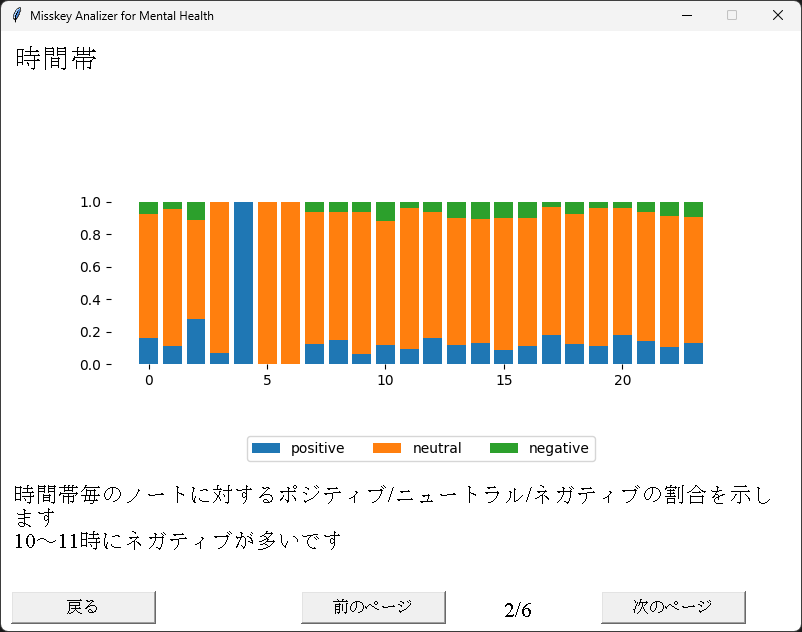
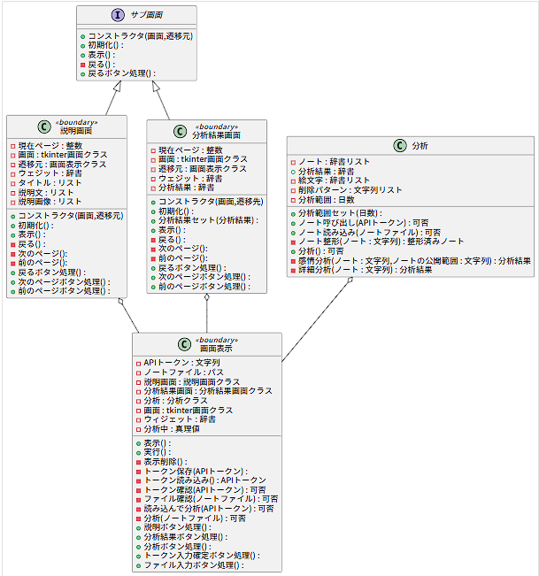

Misskey Analyzer for Mental Health
作品紹介
MisskeyというSNS向けで、投稿内容をAIで解析するツールです。
メンタルヘルスに役立てることを目的としています。

工夫点・技術的特徴
制作のきっかけには僕自身が色々悩んでいてストレスを受けていた時期だったということもあります。
Misskeyはオープンソースで公開された分散型SNSで、ユーザも使用可能なAPIの機能が充実しています。
制作前には以下のようなUMLベースの設計図を用意しました。

細かい技術的要素はQiitaにまとめています。
作品リンク
GitHubソースダウンロードページ